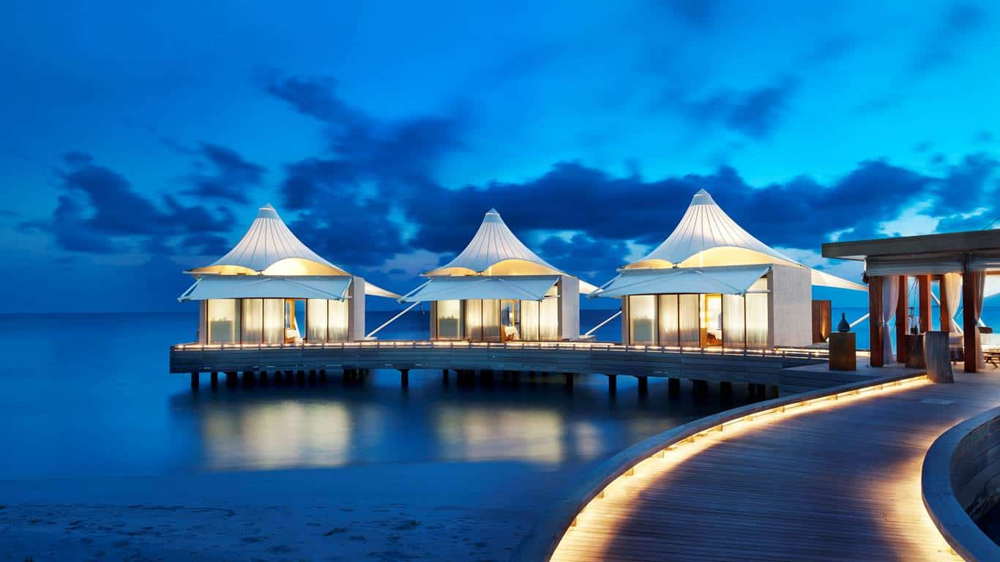
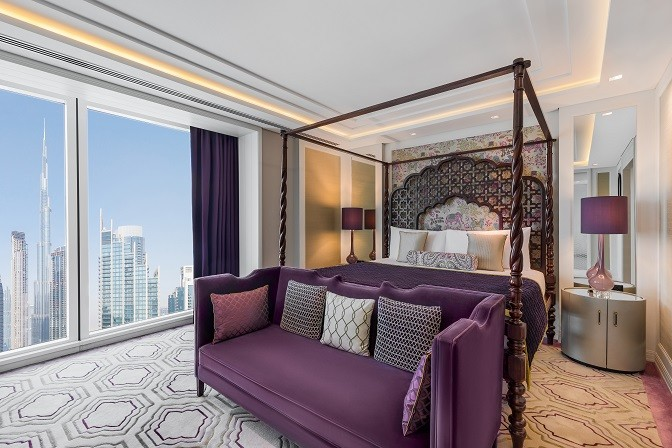

A modern property in a residential neighbourhood,  Treebo Hotel Worldtree Bellandur offers 60 Oak (Standard) rooms that promise quality and comfort. Spread over 5 floors, this hotel has a conference room/hall on the ground floor that can host 30 people. Treebo Hotel Worldtree Bellandur also boasts an in-house restaurant that serves North Indian, South Indian and Chinese food. As for getting to this hotel, City Railway Station and Majestic Bus Station are both 18 km away while Kempegowda International Airport is around 48 km from this hotel. Bellandur Bus Stop is less than a kilometre from this hotel while Petrol Bunk/Green Glen Layout Bus Stop is around 500 metres away. Complimentary breakfast, free WiFi and branded toiletries are provided to guests at this hotel. The 60 rooms offered by Treebo Hotel Worldtree Bellandur are categorised as Oak (Standard) and can accommodate 3 adults and 1 child. These rooms come with amenities like a TV with cable/DTH connection, intercom facility, air-conditioning, a study table with chairs, cupboards, a coffee table, cosy beds, and an attached bathroom that provides hot water.  Some of the rooms come with an attached balcony. Speaking of the facilities offered by this hotel, these include an elevator for easy access, the provision of ironing boards when requested by hotel guests, outsourced laundry service on a chargeable basis, power backup, room service and hotel security. The city of Bengaluru is a treasure trove of tourist attractions and though most of these places are more than 15 km away from Treebo Hotel Worldtree Bellandur, a visit is a must. Some of these places are HAL Heritage Centre and Aerospace Museum, Lalbagh, Cubbon Park, Tipu Sultan’s Summer Palace, Bangalore Palace, Visvesvaraya Industrial and Technological Museum, Fun World, Vidhana Soudha, St. Mary’s Basilica, Kempegowda Museum, Bannerghatta National Park, ISKCON Temple, Gandhi Bhavan and Wonderla. When hunger strikes, popular restaurants like Something Bong, Mint Spice Cafe & Restaurant, Punjabi and Just Delhiwala, all within a kilometre from this hotel. If you are a businessperson/corporate travelling to Bengaluru on work, Treebo Worldtree Hotel Bellandur is less than 4 km from the offices of HSBC, Genpact, Akamai, Sony, Accenture, Ecospace, Eco World, First Source Solutions, ANZ, Intel, Northern Trust and Honeywell Technologies. As for shopping, Central Mall, Forum Mall (Koramangala), Phoenix Marketcity are within 7 km while Phoenix Market City is around 11 km away. If going local is what you like, Koramangala is your best bet. For medical aid, make your way to Cloudnine Hospital, Columbia Asia and Sakra World Hospital are not more than 2 km from this hotel.